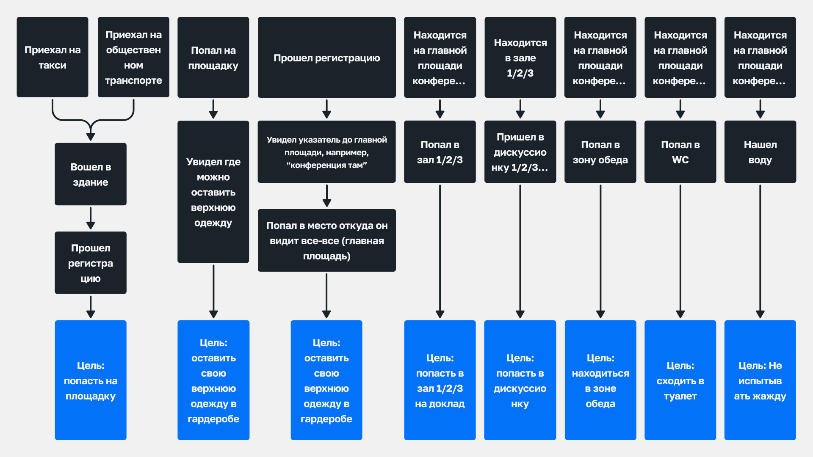

Проблема и почему решением стала метрика
Компания проводит 14–20 офлайн-конференций в год с аудиторией до тысячи участников. Почти каждая площадка — новая, опыт терялся между событиями, а проблемы с навигацией обсуждались на уровне ощущений.
Проблема
Каждая конференция решала проблему навигации заново, без накопления знаний и возможности сравнения площадок и решений между событиями. Не существовало объективной системы оценки. Команды обсуждали проблемы на уровне ощущений. Невозможно было сравнить площадки между собой и видеть динамику.
Почему именно метрика
Навигация не напрямую влияет на NPS — но при высокой плотности потоков она разрушает опыт участника и может привести к уходу с мероприятия. При этом никакого способа измерить это не существовало.
Метрика позволила:
- сравнивать сценарии между собой,
- выявлять зоны перегрузки,
- принимать решения до мероприятия, а не в моменте.

Моя роль
Product Designer
Мне поставили задачу на уровне проблемы: придумать, как оценивать навигацию на площадке. Метод, структуру и критерии — выбирала самостоятельно. Готовых решений почти не существовало: пришлось изучать книги по урбанистике и вейфайндингу, адаптировать подходы из офлайн-среды к логике конференций. Результат защищала перед своим отделом и командами, которые в итоге внедрили методику в работу.
Отвечала за:
- формализацию проблемы отсутствия измеримости;
- проектирование структуры метрики и критериев оценки;
- разработку пользовательских сценариев офлайн-передвижения;
- тестирование методики на 9 конференциях;
- внедрение стандарта оценки в работу Event-, CX- и Marketing-команд.
Работала на стыке UX-исследования, операционного анализа и продуктового подхода к метрикам.
Процесс

Решение
Методика включает:
- сценарную структуру анализа,
- критерии оценки по зонам,
- числовой Navigation Score,
- шаблон отчёта для сравнения площадок,
- рекомендации по размещению указателей и карт.
Система спроектирована так, чтобы аудит можно было провести за 1–2 часа без участия дизайнера.

Почему равные веса — осознанное решение
Я осознанно не вводила веса сценариев. Несмотря на разную функциональную значимость зон, каждая из них влияет на непрерывность участия.
Взвешенная модель была бы точнее — но создала бы споры о весах на каждой новой площадке и усложнила аудит для неподготовленного ревьюера.
Для быстрого и воспроизводимого инструмента важнее простота и равная модель оценки.
Критерии оценки пространственных сценариев
| Тип | Критерий оценки | Оценка 0 — неудовлетворительно | Оценка 0.5 — допустимо, но есть барьеры | Оценка 1 — удобно и понятно |
|---|---|---|---|---|
| Пространственные | Понятность перемещения между локациями | Участник теряется, нет указателей | Путь неочевиден, требуется помощь/время | Маршрут ясен, есть указатели, навигация логична |
| Время на ориентирование | Тратит на маршрут >2 минут, нужна помощь | 1–2 минуты, возможно без помощи | < 1 минуты, понятно с первого взгляда | |
| Видимость ключевых зон (залы, дискуссионные, кофе-брейки) | Не видно/непонятно | Надо искать, спрашивать | Хорошо видно, легко найти | |
| Ситуативные | Доступность информации о возможностях | Нет явных источников (стендов, инфо-экранов) | Информация доступна, но разбросана | Информация централизована и заметна |
| Понятность инструкций, действий | Неясно как участвовать | Понял, но потребовалось усилие | Понял сразу, всё ясно и доступно | |
| Временно-пространственные | Согласованность расписания и пространства | В расписании неясно, где будет активность | Есть путаница, но можно разобраться | Расписание и локации синхронизированы |
| Простота и понятность записи на активности | Нет записи или сложная механика записи | Записался, но процесс неинтуитивный | Легко записаться, понятный механизм |
Результаты
- Создала воспроизводимую систему оценки навигации и внедрила её в работу 3 отделов.
- 9 конференций протестированы по единой методике (3 площадки)
- Появилась числовая метрика для сравнения навигации между событиями.
- Оценка занимает 1–2 часа и не требует участия дизайнера.
- Навигация из разовой операционной задачи стала управляемым стандартом подготовки мероприятий.

Что я вынесла из этого проекта
Навигация стала управляемым параметром — не потому что появился новый инструмент, а потому что появился способ её измерить. Методика встроилась в общее дерево метрик удовлетворённости участников: Navigation Score стал одним из косвенных индикаторов непрерывности опыта, который влияет на NPS.
Раньше этого звена в системе измерений не было вовсе. Команды перестали спорить на уровне ощущений — и начали готовить навигацию как продуктовую задачу с критериями и данными.